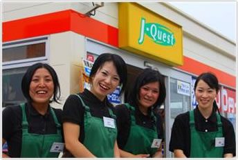

採用情報トップ＞パートタイマースタッフ募集＞VOICE
VOICE

大学に通いながら空いた時間にアルバイトをしている学生スタッフのＵさん。
いつも笑顔でお客様からも大人気！！
とにかくJ-Questが大好きで、仕事も楽しくて仕方がないとのこと。
勉強とアルバイトの両立で大変なはずなのに、
なぜ今のお仕事が大好きなのでしょうか？
Ｕさんにその秘密を聞いてみました^o^/
J-Questでのやりがいってどんなことですか？
精算後にお客様から笑顔で「ありがとうね！」と言って頂けるのが、私自身、元気を頂けます！
苦労はどんなことですか？
お客様一人ひとりに合った最適な対応を考えて、お客様には気持ち良くお帰り頂きたいと心掛けていますが、それを実際に行動に移すのが難しいですね・・・。
お客様に喜んでいただく為に、どんな工夫・取り組みをしていますか？
お客様に合った言葉の言い回しを使い分けるようにしています。
また、困っているお客様から声をかけられる前に、自分から気付いて駆けつけています。
お客様とのホットエピソードを教えて下さい。
とても暑い日に外でお客様のお車を誘導している時に、「熱いけど頑張ってね！」と言って頂いたことがとても嬉しく疲れもふっ飛びました！
これから働いてみようと思っている方へ一言お願いします。
スタッフのみんながお客様のことを第一に考えているので、団結力がとても強く笑顔で溢れていて楽しく働けます！
お客様との触れ合いからも、「人の温かさ」を強く感じられる職場です。
こんな明るく楽しいJ-Questで一緒に働ける日を待っています♪

J-Questで働き始めて5年以上のベテラン主婦スタッフ。
とにかく明るく、ご来店されたお客様とは必ず会話をするほど
コミュニケーションをとるのが大好きなＮさん。
今ではＮさんがお休みの日は、お客様から「今日はいないの？」と
声がかかるぐらいになっています！
そんなＮさんにお話しを聞いてみました^o^/
J-Questでのやりがいってどんなことですか？
お客様に喜んで頂きたい、感動を与えたい、というJ-Questの想いのもと、それに合った接客を
どう行っていくかを自分で考え、自分の思ったように行動させてもらえているので、とても毎日が
充実しています♪
また、他店のお手伝いに行った時でも心から接していると、お客様から笑顔が返ってくるので
元気になります！
苦労はどんなことですか？
やはり家庭との両立ですね。特に子供の具合が悪い日などは働きたくてもお休みしています。
このお仕事は本当に好きだし、決められたシフトの日はお客様に会えるように、自分はもちろん
体調管理には気を配っています。
お客様に喜んでいただく為に、どんな工夫・取り組みをしていますか？
まずは、明るい笑顔と挨拶でお客様をお出迎えする。
さらには、お客様に合った距離間で待機して、お客様から声をかけられる前に駆けつけるように
しています。
お客様とのホットエピソードを教えて下さい。
改めて思い出すとたくさんあります。
雨の中、外でずぶ濡れで仕事をしていると、優しく「風邪ひくなよ」と声をかけ傘を差し出して頂いたり、
私がちょっと仕事で失敗して落ち込んでいると、「元気ないな、元気出せよ！」と気にかけて励まして
くださったり、そっと車から「あとで食べな、いつも元気で気持ちいいよ！」とパンをくれたり・・・。
でも私が一番いただいて嬉しいのは「ありがとう」のお言葉です♪
暑い日でも寒い日でも、雪の中でも、お客様からの「ありがとう」が私を一気に元気にさせます！
これから働いてみようと思っている方へ一言お願いします。
本当にやりがいがあって、とても温かい職場だと思います。
働く上でみんなそれぞれ事情があって条件が違って、仕事を探すのって本当に大変ですよね。
でも私自身、小さな子供がいて毎日本当に忙しくて、でも楽しく充実した日々を過ごせています。
J-Questに入社するまで正直そんなに感じなかった「ありがとう」の言葉の大切さが実感できる
はずです。
最高のおもてなしに挑戦して、お客様からの「ありがとう」のお言葉に感動してみて下さい♪

チーフスタッフのＴさんは、店舗OPEN当時からのオープニングスタッフで、お店のことなら何でもわかると言えるほどの大ベテラン。
チーフスタッフとして、ストアマネジャーを支えながらお店の中心的存在として活躍しています♪
そんなＴさんにお話を聞いてみました。
J-Questでのやりがいってどんなことですか？
スタッフのみんなが独り立ちしていくことがとても感動します！
まるで子供を育てるかのよう。そして、そのことが自分自身の成長に確実につながっていることがやりがいです。
同時に、お客様からの「ありがとう」の言葉。これが何よりも自分のやる気につながっています！
苦労はどんなことですか？
やはりチーフという責任あるポジションになると役割も増えてきます。
そうした時に仕事の優先順位をつけるのがまだまだかな~と感じています。
もっとバランスよく仕事できるようになろうと日々努力しています。
お客様に喜んでいただく為に、どんな工夫・取り組みをしていますか？
セルフということもあり、お客様自身で給油していただくのですが、困っているお客様や不安を感じているお客様がいないかどうかを常に気にかけ、必要に応じて駆け寄ったり、サポートしたりしています。
お客様とのホットエピソードを教えて下さい。
初めてご来店のご夫婦のお客様に操作方法などをご案内させていただいた際、「スタッフがいてくれるから安心だね。また来るよ。」と言っていただけたことが何よりうれしかったですね☆
自然と「慣れるまでいつでもご案内させていただきますね♪」という言葉が出てきました。
いかにお客様の不安を取り除くことができるか、それが私たちの重要な役目ですね。
これから働いてみようと思っている方へ一言お願いします。
未経験でも全く問題ありません！安心して働けます。
そして、女性でも働きやすく、自分自信責任を持って働くことができ、仲間とともに成長ができる場所、それがJ-Questです♪
|  |
採用情報トップ＞パートタイマースタッフ募集＞VOICE